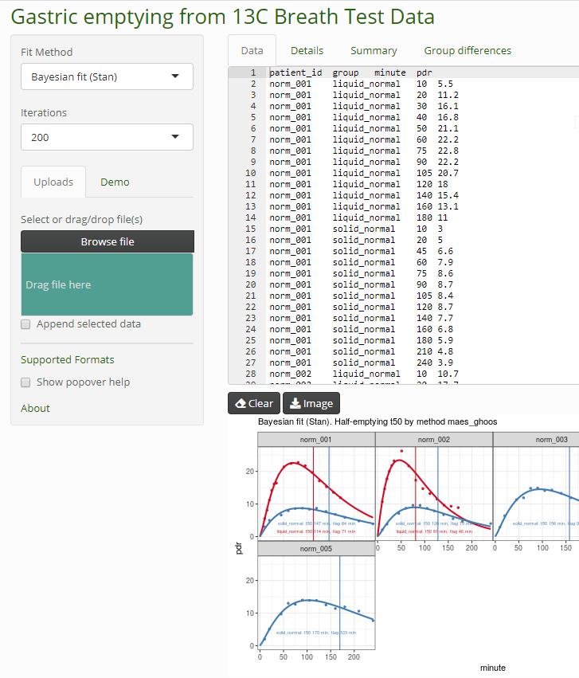

Dieter Menne
Menne Biomed Consulting Tübingen, Germany
https://www.menne-biomed.de
dieter.menne@menne-biomed.de
Dieter Menne Menne Biomed Consulting https://www.menne-biomed.de
Fit 13C time series data with Bayesian methods using Stan. This is an add-on to package breathtestcore. The Stan functions have been moved to this package to avoid long compile and test times.
